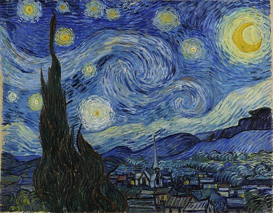
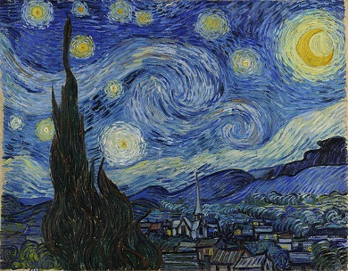

Живопись
 

Живопись — творческая деятельность человека, «способность к воспроизведению разнообразных явлений жизни: природы, человека, животного мира, событий из общественной или частной жизни людей…»; вид изобразительного искусства, произведения которого создаются с помощью красок (темпера, масляные краски, акрил, гуашь).
Живопись - плоскостное изобразительное искусство, специфика которого заключается в представлении при помощи красок, нанесенных на поверхность изображение реального мира, преобразованных творческим воображением художника. Живопись означает «писать жизнь», «писать живо», то есть полно и убедительно передавать действительность. Живопись-искусство цвета.
Основное выразительное средство живописи — цвет, воздействующий на общее восприятие зрителем картины, позволяющий обращать внимание на важные детали, усиливающий эмоциональную составляющую произведения. Оттенки и тона, необходимые художнику для точной передачи колера, объема, пространства достигаются путем смешивания красок на палитре.
Основные виды живописи
Станковая живопись
Это род живописи, независящий от каких-либо объектов и является полностью автономным художеством. Она подразумевает украшение стен, потолков и других строений. К станковой живописи относятся: портрет, пейзаж, сюжет, натюрморт. Классика станковой живописи – холст, масляные или темперные краски. Иногда используются пастель, акварельные краски, гуашь, тушь.
Монументальная живопись
Это род живописи, который предполагает нанесение изображения на стены зданий и других архитектурных сооружений. Монументальную живопись принято делить на 4 основных вида:
- фреска,
- живопись темперой,
- мозаика,
- витраж.
Основные жанры живописи
- Портрет – наиболее реалистичное рисование человека;
- Пейзаж - самый популярный жанр живописи, в котором автор отображает природу;
- Архитектурная живопись – напоминает чем-то пейзаж, но отличается наличием архитектурных сооружений на картине;
- Историческая живопись – в этом жанре отображают какое-либо историческое событие;
- Батальный жанр - в таких работах отображается военные события;
- Натюрморт – изображение цветов, еды, посуды и других подручных предметов;
- Марина – морские пейзажи, прибережье с видом на море;
- Анимализм – изображение животных и птиц, в том числе и мифических.
Известные художники
- Пабло Пикассо;
- Винсент ван Гог;
- Леонардо да Винчи;
- Рембрандт ван Рейн;
- Йоханнес Вермеер;
- Микеланджело;
- Эдвард Мунк;
- Сальвадор Дали;
- Клод Моне;
- Джексон Поллок;
- Пьер-Огюст Ренуар;
- Гюстав Климт;
- Фрида Кало;
- Рене Магритт;
- Энди Уорхол.